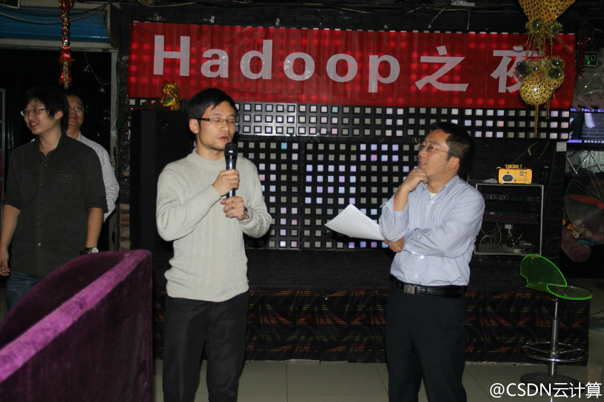
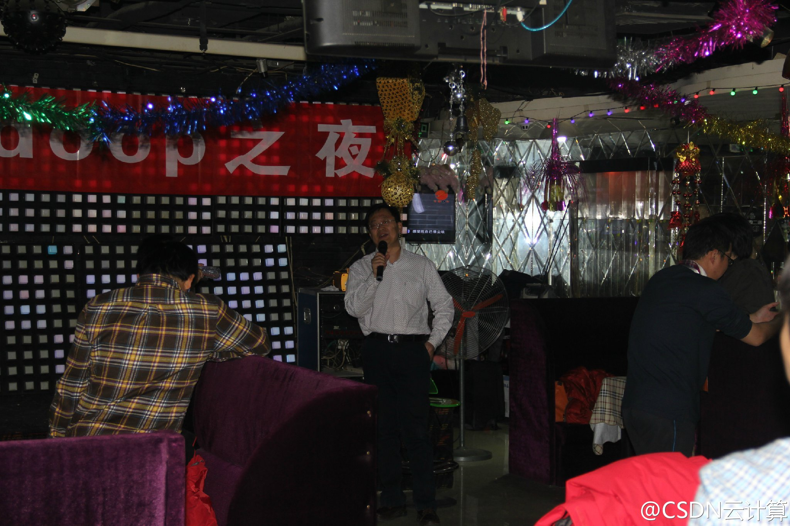
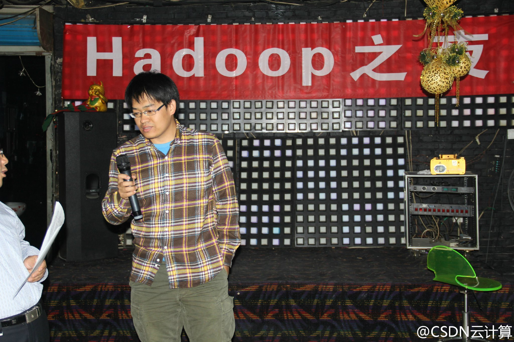

回复@武卫东:武总也来参合下，吸几口？ //@武卫东:奥森的霾，别有一番风味。@Ada李力:早上乘车去奥森公园快走。雾霾严重，得戴口罩，也给参加快走的小伙伴们带了备用的。公交车，地铁上戴口罩的人还是很少。
转@吕宗智 评语： 支持健步走活动! 既是对身体和耐力的锻炼，也是对意志和毅力的培养! 今天属于重度雾霾，但即使是如此恶劣的环境，参加今天活动的人员却是最近最多的，充分说明了it业者吃苦耐劳和坚韧不拔的本性! @Ada李力:虽然雾霾天，参加@CTO俱乐部 健步走活动的人还不少。
回复@大狗脑袋:雾霾天情况下，我觉得这个生命效果公式是成立的： 户外健走+口罩防护 > 死宅+呆室内密闭空间 //@大狗脑袋:用绳命在健走啊，这是@Ada李力:虽然雾霾天，参加@CTO俱乐部 健步走活动的人还不少。
//@TankerV: 网络是云技术的硬件基础，硬件推动应用发展，应用拉动硬件提升，国内的网络硬件发展太慢，我们的芯片有时是在等市场，韩国则是迅速发展网络硬件，这种差异很可能造成中国互联网应用发展落后别人。//@盛科张卫峰: 这么重大的新闻，今天才看到，虽然晚了点，也要转发一下。中国的Nebula啊@ben_杜玉杰:#OpenStack# 大家都说越来越感觉到云计算中最关键的是网络，网络搞不定、不灵活，会引起很多问题，甚至产品都不能当作完善的产品发布，所以狠下心来把技术做扎实，现在终于可以向关心我们的朋友们汇报一下了，也欢迎社区的朋友交流合作，小伙伴们你们辛苦了～网页链接
//@CSDN云计算:BAT的专家外，还有IBM、小米、高德的工程师们，移动研究院的美女专家，创新大赛获奖的同学，未来，大会应该是社区朋友们的一次大型聚会！//@Hadoop中国: 有社区才算好的开源生态环境//@CSDN云计算:40多位Hadoop专家和技术爱好者一起参与，气氛很热烈啊。这样的活动以后我们会常办的。@CSDN云计算:#Hadoop之夜#在一群轻松愉快的自我介绍中开始了，猛一发现，这又是一个百度、阿里、IBM等齐聚的节奏，也是个招聘、推销自己的节奏，更是一个互相关探讨、交流的场合。 


 网页链接
网页链接